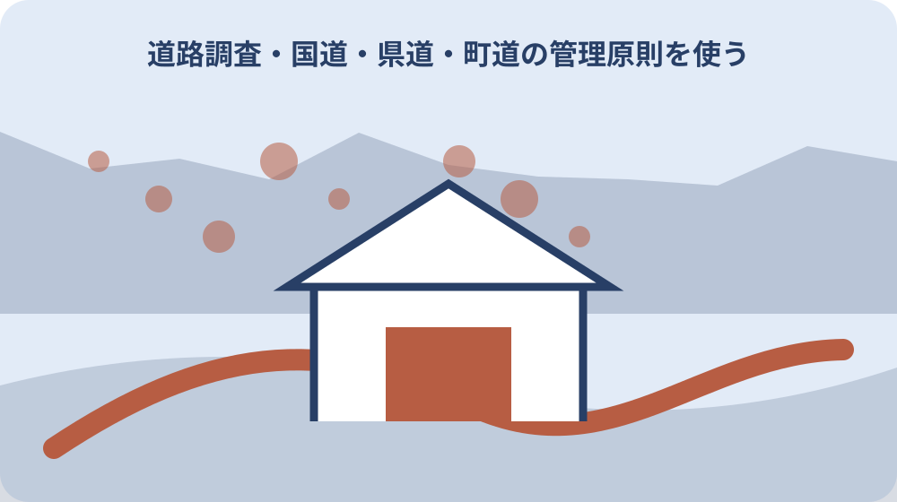

先に結論を確認する
この記事の答え：通称だけでは確定しません。正式な道路種別と路線名を確認し、国・県・町などの管理主体を照合します。
森町で最初に照合する条件：現地の交差点名や通称を写真で残し、正式路線名とは別欄にする。
現地の通称を正式名と分けて撮る
交差点、橋、バス停、店舗など住民が使う呼称は場所を伝える手掛かりになるが、正式路線名の証明にはならない。現地の通称を正式名と分けて撮るについて資料と現物を比べる際は、通称は位置説明に残し、正式名欄を上書きしないことで、地域の呼び方と行政上の名称を両立できます。
道路全景と名称が読める標識を別々に撮ると、電話口で地点を説明しやすい。現地の通称を正式名と分けて撮るを家族へ引き継ぐ記録では、通称は位置説明に残し、正式名欄を上書きしないことで、地域の呼び方と行政上の名称を両立できます。
撮影位置を地図へ一点で落とし、進行方向と最寄り交差点を記入する。現地の通称を正式名と分けて撮るについて担当先へ尋ねる前には、通称は位置説明に残し、正式名欄を上書きしないことで、地域の呼び方と行政上の名称を両立できます。
地図アプリの表示名だけで町道・県道を決めず、公的窓口で照合する。現地の通称を正式名と分けて撮るで判断を急がないためには、通称は位置説明に残し、正式名欄を上書きしないことで、地域の呼び方と行政上の名称を両立できます。
通称は位置説明に残し、正式名欄を上書きしないことで、地域の呼び方と行政上の名称を両立できます。
道路標識の番号をそのまま転記する
標識にある番号は道路種別を探す入口だが、支線や重複区間では見える番号だけで管理区間を断定できない。道路標識の番号をそのまま転記するについて資料と現物を比べる際は、標識番号が読めない場合も無理に車道へ近づかず、交差点名と進行方向を管理者照会の手掛かりにします。
上下線の両方向で標識が見える位置を確かめ、番号と標識形状を写真に残す。道路標識の番号をそのまま転記するを家族へ引き継ぐ記録では、標識番号が読めない場合も無理に車道へ近づかず、交差点名と進行方向を管理者照会の手掛かりにします。
番号、標識位置、確認日時を伝えて、該当区間の正式路線名を問い合わせる。道路標識の番号をそのまま転記するについて担当先へ尋ねる前には、標識番号が読めない場合も無理に車道へ近づかず、交差点名と進行方向を管理者照会の手掛かりにします。
古い写真の番号を現在も有効とせず、工事や路線変更前後を確認する。道路標識の番号をそのまま転記するで判断を急がないためには、標識番号が読めない場合も無理に車道へ近づかず、交差点名と進行方向を管理者照会の手掛かりにします。
標識番号が読めない場合も無理に車道へ近づかず、交差点名と進行方向を管理者照会の手掛かりにします。
都市計画決定番号と路線名を別欄にする
森町の都市計画道路資料は決定番号、路線名、事業主体を分けて掲載している。都市計画決定番号と路線名を別欄にするについて資料と現物を比べる際は、都市計画決定番号には資料の基準日を添え、供用中の道路番号と同一だと決めつけない記録にします。
番号だけを家族へ渡すと、県道番号や工事番号との取り違えが起きやすい。都市計画決定番号と路線名を別欄にするを家族へ引き継ぐ記録では、都市計画決定番号には資料の基準日を添え、供用中の道路番号と同一だと決めつけない記録にします。
決定番号の隣に路線名と資料基準日を書き、現地地点との対応を地図で示す。都市計画決定番号と路線名を別欄にするについて担当先へ尋ねる前には、都市計画決定番号には資料の基準日を添え、供用中の道路番号と同一だと決めつけない記録にします。
都市計画上の線が直ちに供用道路の管理区間を示すとは扱わない。都市計画決定番号と路線名を別欄にするで判断を急がないためには、都市計画決定番号には資料の基準日を添え、供用中の道路番号と同一だと決めつけない記録にします。
都市計画決定番号には資料の基準日を添え、供用中の道路番号と同一だと決めつけない記録にします。

事業主体と現在の管理者を区別する
整備資料の事業主体は工事を進める主体を示すが、現在の維持管理窓口と常に同義とは限らない。事業主体と現在の管理者を区別するについて資料と現物を比べる際は、整備時の事業主体と維持管理の連絡先は別欄に置き、現在の不具合を過去の施工者へ誤送信しません。
中日本高速道路、静岡県、森町という主体の違いを資料から確認できる。事業主体と現在の管理者を区別するを家族へ引き継ぐ記録では、整備時の事業主体と維持管理の連絡先は別欄に置き、現在の不具合を過去の施工者へ誤送信しません。
不具合連絡では現在の管理者、計画照会では資料の事業主体というように質問を分ける。事業主体と現在の管理者を区別するについて担当先へ尋ねる前には、整備時の事業主体と維持管理の連絡先は別欄に置き、現在の不具合を過去の施工者へ誤送信しません。
過去の整備主体名だけで現在の連絡先を確定しない。事業主体と現在の管理者を区別するで判断を急がないためには、整備時の事業主体と維持管理の連絡先は別欄に置き、現在の不具合を過去の施工者へ誤送信しません。
整備時の事業主体と維持管理の連絡先は別欄に置き、現在の不具合を過去の施工者へ誤送信しません。
国道・県道・町道の管理原則を使う
国の案内は管理国道、都道府県管理国道・県道、市町村道で管理者が分かれると説明する。国道・県道・町道の管理原則を使うについて資料と現物を比べる際は、国道という名称だけでは管理区分が決まらないため、地点を示して国・県のどちらの区間か確認します。
同じ国道でも管理区分が異なることがあるため、国道という語だけでは窓口が一つに決まらない。国道・県道・町道の管理原則を使うを家族へ引き継ぐ記録では、国道という名称だけでは管理区分が決まらないため、地点を示して国・県のどちらの区間か確認します。
道路種別、路線番号、地点の三点をそろえ、担当機関へ区間を確認する。国道・県道・町道の管理原則を使うについて担当先へ尋ねる前には、国道という名称だけでは管理区分が決まらないため、地点を示して国・県のどちらの区間か確認します。
道路脇の側溝や河川が別管理の場合もあるため、対象物を具体的に示す。国道・県道・町道の管理原則を使うで判断を急がないためには、国道という名称だけでは管理区分が決まらないため、地点を示して国・県のどちらの区間か確認します。
国道という名称だけでは管理区分が決まらないため、地点を示して国・県のどちらの区間か確認します。
境界相談は町管理道路かを先に確かめる
森町の境界確定案内は町が管理する道路・河川等に接する民有地を対象としている。境界相談は町管理道路かを先に確かめるについて資料と現物を比べる際は、境界相談では接する土地の地番と町管理道路であることを先にそろえ、日常管理の通報と資料束を分けます。
家の前に道路がある事実だけで森町の境界申請対象になるとは限らない。境界相談は町管理道路かを先に確かめるを家族へ引き継ぐ記録では、境界相談では接する土地の地番と町管理道路であることを先にそろえ、日常管理の通報と資料束を分けます。
土地の地番、公図、道路の正式名を用意し、用地係へ対象かを相談する。境界相談は町管理道路かを先に確かめるについて担当先へ尋ねる前には、境界相談では接する土地の地番と町管理道路であることを先にそろえ、日常管理の通報と資料束を分けます。
私道や県管理道路を町管理道路として申請準備しない。境界相談は町管理道路かを先に確かめるで判断を急がないためには、境界相談では接する土地の地番と町管理道路であることを先にそろえ、日常管理の通報と資料束を分けます。
境界相談では接する土地の地番と町管理道路であることを先にそろえ、日常管理の通報と資料束を分けます。
日常管理と境界確定を別の相談票にする
草刈りや落下物処理と、土地の境界確定では目的も必要資料も異なる。日常管理と境界確定を別の相談票にするについて資料と現物を比べる際は、穴や倒木は現在地と危険状況を優先し、境界確定は公図と地番を用意するなど、用件別に必要情報を変えます。
穴や倒木の緊急連絡に登記資料一式は不要でも、正確な地点説明は欠かせない。日常管理と境界確定を別の相談票にするを家族へ引き継ぐ記録では、穴や倒木は現在地と危険状況を優先し、境界確定は公図と地番を用意するなど、用件別に必要情報を変えます。
管理不具合は写真と現在地、境界は地番と公図というように資料束を分ける。日常管理と境界確定を別の相談票にするについて担当先へ尋ねる前には、穴や倒木は現在地と危険状況を優先し、境界確定は公図と地番を用意するなど、用件別に必要情報を変えます。
一度の電話で両方が完了したとせず、担当と受付内容をそれぞれ記録する。日常管理と境界確定を別の相談票にするで判断を急がないためには、穴や倒木は現在地と危険状況を優先し、境界確定は公図と地番を用意するなど、用件別に必要情報を変えます。
穴や倒木は現在地と危険状況を優先し、境界確定は公図と地番を用意するなど、用件別に必要情報を変えます。
道路に付随する側溝の管理を確認する
側溝が道路沿いにあっても、道路施設、水路、民有施設のどれかは外観だけで決まらない。道路に付随する側溝の管理を確認するについて資料と現物を比べる際は、側溝は道路施設、水路、民有施設の可能性があるため、外観だけで町管理と断定せず対象物を明示します。
蓋、流向、接続先、道路端との位置関係を安全な場所から撮影する。道路に付随する側溝の管理を確認するを家族へ引き継ぐ記録では、側溝は道路施設、水路、民有施設の可能性があるため、外観だけで町管理と断定せず対象物を明示します。
詰まりや破損の対象物を示し、道路名と地番の両方で管理者へ照会する。道路に付随する側溝の管理を確認するについて担当先へ尋ねる前には、側溝は道路施設、水路、民有施設の可能性があるため、外観だけで町管理と断定せず対象物を明示します。
私有地へ入ったり蓋を開けたりせず、見える範囲の事実だけを伝える。道路に付随する側溝の管理を確認するで判断を急がないためには、側溝は道路施設、水路、民有施設の可能性があるため、外観だけで町管理と断定せず対象物を明示します。
側溝は道路施設、水路、民有施設の可能性があるため、外観だけで町管理と断定せず対象物を明示します。
災害時の連絡先を道路別に準備する
大雨や倒木時は管理者を調べ始める余裕が少ないため、平常時の整理が役立つ。災害時の連絡先を道路別に準備するについて資料と現物を比べる際は、平常時に主要経路の管理主体と通行情報の発信元を整理しておけば、大雨時に現場へ近づかず連絡できます。
自宅から病院、駅、避難先までの主要道路を一経路ずつ管理主体と結ぶ。災害時の連絡先を道路別に準備するを家族へ引き継ぐ記録では、平常時に主要経路の管理主体と通行情報の発信元を整理しておけば、大雨時に現場へ近づかず連絡できます。
通行止め情報の発信元と道路不具合の通報先を別列にして家族共有する。災害時の連絡先を道路別に準備するについて担当先へ尋ねる前には、平常時に主要経路の管理主体と通行情報の発信元を整理しておけば、大雨時に現場へ近づかず連絡できます。
緊急時は現場へ近づかず、警察・消防を含む必要な通報を優先する。災害時の連絡先を道路別に準備するで判断を急がないためには、平常時に主要経路の管理主体と通行情報の発信元を整理しておけば、大雨時に現場へ近づかず連絡できます。
平常時に主要経路の管理主体と通行情報の発信元を整理しておけば、大雨時に現場へ近づかず連絡できます。
問い合わせ回答を地点単位で保存する
同じ路線でも問い合わせ地点が違えば管理区間や対象施設が変わり得る。問い合わせ回答を地点単位で保存するについて資料と現物を比べる際は、口頭回答には説明した地点範囲を添え、同じ路線の別区間にも当てはまるという誤った拡張を防ぎます。
回答日、担当機関、担当部署、説明した地点、回答内容を一組にする。問い合わせ回答を地点単位で保存するを家族へ引き継ぐ記録では、口頭回答には説明した地点範囲を添え、同じ路線の別区間にも当てはまるという誤った拡張を防ぎます。
口頭回答の後に参照図や公式ページ名を確認し、家族が再照会できる形にする。問い合わせ回答を地点単位で保存するについて担当先へ尋ねる前には、口頭回答には説明した地点範囲を添え、同じ路線の別区間にも当てはまるという誤った拡張を防ぎます。
路線全体への一般回答として広げず、確認した地点の範囲を明記する。問い合わせ回答を地点単位で保存するで判断を急がないためには、口頭回答には説明した地点範囲を添え、同じ路線の別区間にも当てはまるという誤った拡張を防ぎます。
口頭回答には説明した地点範囲を添え、同じ路線の別区間にも当てはまるという誤った拡張を防ぎます。
売買資料には三段階の根拠を添える
重要事項の整理では通称、正式路線名、管理者を別々に示すと再確認しやすい。売買資料には三段階の根拠を添えるについて資料と現物を比べる際は、売買資料では道路名称の確認と接道・幅員・境界の判断を分け、それぞれの根拠資料を明示します。
道路の幅員や接道判定は管理者名だけで確定せず、別の調査項目として扱う。売買資料には三段階の根拠を添えるを家族へ引き継ぐ記録では、売買資料では道路名称の確認と接道・幅員・境界の判断を分け、それぞれの根拠資料を明示します。
地図、現地写真、公的回答を同じ地点番号で結び、更新日を付ける。売買資料には三段階の根拠を添えるについて担当先へ尋ねる前には、売買資料では道路名称の確認と接道・幅員・境界の判断を分け、それぞれの根拠資料を明示します。
道路名の整理を建築基準法上の道路判定や境界確定の代わりにしない。売買資料には三段階の根拠を添えるで判断を急がないためには、売買資料では道路名称の確認と接道・幅員・境界の判断を分け、それぞれの根拠資料を明示します。
売買資料では道路名称の確認と接道・幅員・境界の判断を分け、それぞれの根拠資料を明示します。
大石の視点：名前より先に地点を固定する
ここまでの道路管理原則と森町資料の記載は公的資料で確認できる事実である。大石の視点：名前より先に地点を固定するについて資料と現物を比べる際は、公的資料から確認できる管理原則と、地点を先に固定すべきだという私の実務上の意見は分けて読んでください。
私は不動産相談では道路名を言い合う前に、地番と写真で対象地点を固定するのが近道だと考える。大石の視点：名前より先に地点を固定するを家族へ引き継ぐ記録では、公的資料から確認できる管理原則と、地点を先に固定すべきだという私の実務上の意見は分けて読んでください。
その上で通称、番号、正式路線名、管理者を順に足せば、家族と専門家が同じ道を見られる。大石の視点：名前より先に地点を固定するについて担当先へ尋ねる前には、公的資料から確認できる管理原則と、地点を先に固定すべきだという私の実務上の意見は分けて読んでください。
これは私見であり、接道や境界の法的判断は所管窓口と専門家の確認を要する。大石の視点：名前より先に地点を固定するで判断を急がないためには、公的資料から確認できる管理原則と、地点を先に固定すべきだという私の実務上の意見は分けて読んでください。
公的資料から確認できる管理原則と、地点を先に固定すべきだという私の実務上の意見は分けて読んでください。